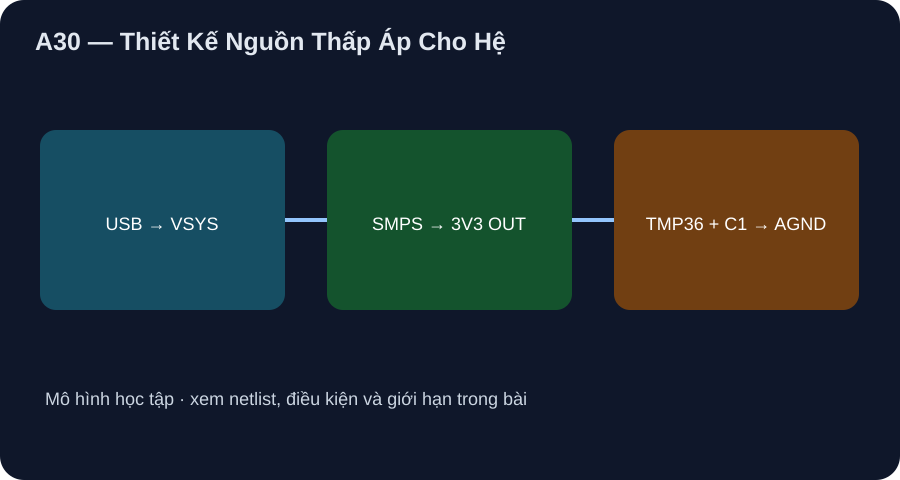

Thiết Kế Nguồn Thấp Áp Cho Hệ
Theo đường USB–VSYS–3V3 có sẵn trên Pico và tính tải cảm biến có điều kiện.
- Truy đường cấp USB tới 3V3(OUT) theo đúng board datasheet.
- Tính công suất tải TMP36 từ giới hạn dòng và phân biệt với tổng dòng board chưa biết.
- Thiết kế phiếu đo rail/VREF/ripple mà không gọi mô hình nguồn lý tưởng là đo thật.

Đọc hình bằng chữ
USB đi tới VBUS Pico, qua diode D1 trên board tới VSYS và bộ nguồn chuyển mạch trên board để tạo 3V3 OUT. Rail đó cấp TMP36 và tụ C1 0,1 microfarad hồi về AGND. ADC_VREF lấy từ rail được lọc. Không có nguồn pin hoặc điện lưới trong bài.
1. Đường nguồn đã có trên board
Pico datasheet §4.5 mô tả USB VBUS qua diode D1 tới VSYS, rồi nguồn board tạo 3,3 V; pin 36 3V3(OUT) cấp sensor, pin 33 AGND làm hồi. Không đưa 5 V USB tới GP26 hoặc TMP36. Không cấp ngược 3V3(OUT), không thêm nguồn VSYS thứ hai trong chặng này. Giá trị USB 5 V là danh định, rail thật phụ thuộc adapter/cáp/tải. ADC_VREF lấy từ 3,3 V đã lọc trên Pico, không tự nhận là chính xác 3,300 V.
2. Schematic, BOM và ngân sách
Schematic net: VBUS→D1→VSYS→SMPS nằm trong B1 Pico; 3V3(OUT) pin 36→U1 pin 1/C1; AGND pin 33→U1 pin 3/C1; U1 pin 2→GP26 pin 31. BOM ngoài board chỉ U1 TMP36GT9Z và C1 gốm 0,1 µF (mã/footprint/định mức điện áp chưa chốt). ADI Rev. H ghi sensor dưới 50 µA, nên ở 3,3 V P_U1<3,3×50 µA=0,165 mW theo điều kiện datasheet. Pico khuyên tải 3V3(OUT) dưới 300 mA tùy VSYS/tải RP2040; không dùng 50 µA để suy tổng dòng hệ đã đo.
3. Mô hình và phép đo tương lai
Mô hình P9-04 đặt rail/VREF chính xác 3,300 V, không mô phỏng D1/SMPS/ripple/ESR. Muốn nghiệm thu thật phải ghi model USB, PCB/firmware, đo VBUS/VSYS/3V3/ADC_VREF khi không/có U1, xem ripple với ground/probe được duyệt và báo sai khác điều kiện. Chưa có dữ liệu nên không có hiệu suất/nhiệt nguồn được xác nhận.
Xem hồ sơ bốn chặng và lab P9-04 để đọc BOM, netlist, bảng đo và giới hạn. Hình A29–A32 là sơ đồ khối tự vẽ, không là sơ đồ CAD/ERC, layout sản xuất hoặc phép đo board.
Vẽ đường nguồn từ USB tới TMP36, phân biệt D1/SMPS thuộc board hay BOM mới; tính P sensor tối đa theo 50 µA ở 3,3 V; liệt kê ba rail hoặc điểm đo còn thiếu và giải thích vì sao 0,165 mW không là công suất cả hệ.
- 2 điểm: USB→D1→VSYS→SMPS→3V3(OUT)→TMP36, AGND hồi, D1/SMPS sẵn trên Pico.
- 2 điểm: B1/U1/C1; không thêm nguồn lưới hoặc Li-ion.
- 2 điểm: 0,165 mW là cận theo dòng sensor, chưa tính RP2040/SMPS/LED/USB.
- 2 điểm: đo VBUS, VSYS, 3V3, ADC_VREF/ripple và điều kiện tải; chưa có số thực.